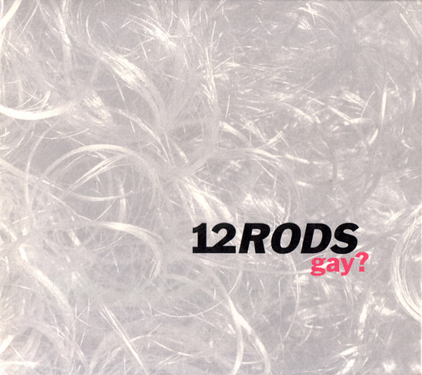
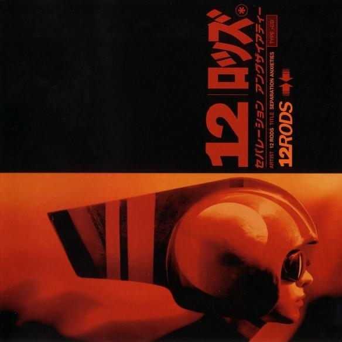
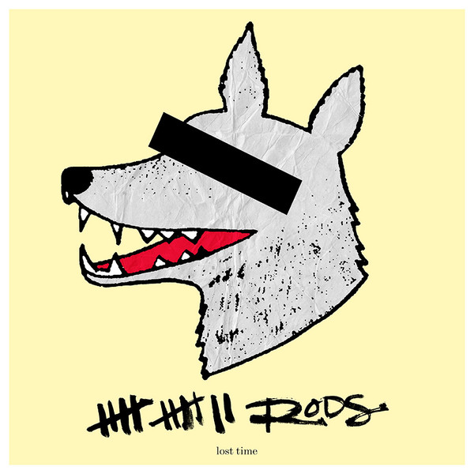
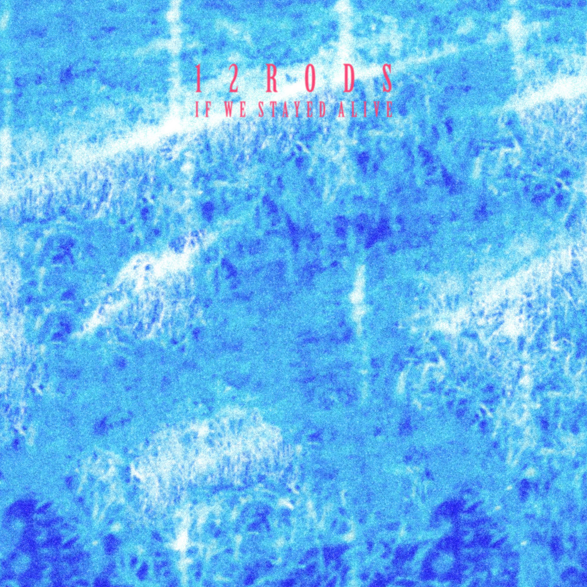

Gay? (1996)
released on january 17, 1996 by v2 records.
- "red" (6:17)
- "make-out music" (3:51)
- "gaymo" (6:09)
- "mexico" (6:23)
- "friend" (5:34)
- "revolute" (9:31)
Separation Anxieties (2000)
released on june 20, 2000 by v2 records. produced by todd rundrgen.
- "kaboom" (4:00)
- "what has happened?" (2:56)
- "astrogimp" (3:57)
- "radioaction" (4:17)
- "i think i'm flying" (3:56)
- "your secret's safe with me" (5:30)
- "marionette" (3:04)
- "everybody (4:05)
- "rock n' roll band" (7:14)
- "repeat" (5:01)
- "glad that it's over" (4:36)
Lost Time (2002)
released on october 15, 2002 by chigliak records.
- "universal time" (1:15)
- "fake magic 8-ball" (3:38)
- "24 hours ago" (4:02)
- "one thing does not belong" (3:06)
- "boy in the woods" (3:48)
- "summertime vertigo" (4:37)
- "accidents waiting to happen" (4:00)
- "terrible hands (3:36)
- "the time is right (to be wrong) (3:30)
- "lost/found" (2:29)
- "telephone holiday" (4:41)

If We Stayed Alive (2023)
to be released on july 7, 2023 by american dreams.
-
list-style: circl;
- "all i can think about" (1:48)
- "my year (this is going to be)" (3:04)
- "private spies" (4:33)
- "comfortable situation" (5:12)
- "the beating" (3:49)
- "hide without delay" (5:14)
- "twice" (4:42)
- "terrible hands (3:36)
Go Back Home